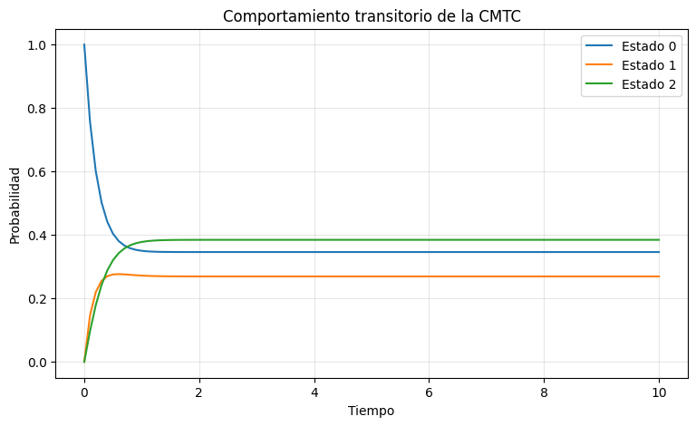
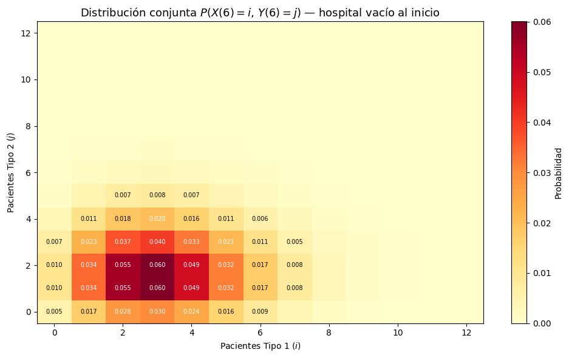
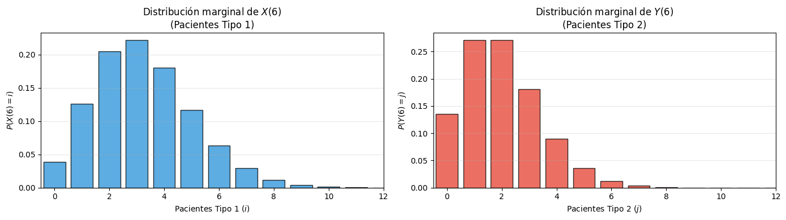

Complementaria Semana 8: Cadenas de Markov en Python I#
Esta semana das el salto de los modelos discretos a los modelos en tiempo continuo. Hasta ahora simulabas sistemas donde el tiempo avanzaba en pasos discretos; aquí el tiempo fluye sin interrupciones y los cambios de estado ocurren a tasas, no con probabilidades de paso.
La herramienta central es la matriz generadora \(Q\): una sola estructura que codifica toda la dinámica del proceso. De ella se obtienen probabilidades transitorias, distribuciones de largo plazo, tiempos de primera pasada y tiempos de ocupación. Al final verificarás los resultados analíticos contra dos estrategias de simulación distintas.
Objetivos#
Construir e interpretar una matriz generadora \(Q\) de una CMTC.
Calcular probabilidades transitorias y de estado estable.
Relacionar \(Q\) con las ecuaciones de Kolmogorov:
\[ \frac{d\pi(t)}{dt}=\pi(t)Q, \qquad \pi(t)=\pi(0)\,e^{Qt}. \]Analizar tiempos de primera pasada y tiempos de ocupación.
Construir un modelo aplicado de CMTC y estudiar su comportamiento transitorio.
Comparar resultados analíticos con simulación mediante
SimPyy mediante saltos directamente a partir de \(Q\).
0. Preparación#
Instala jmarkov si aún no está en tu ambiente virtual. El resto de librerías (NumPy, pandas, matplotlib, SimPy) ya las tienes de semanas anteriores.
# %pip install jmarkov
# %pip install simpy
import numpy as np
import pandas as pd
import matplotlib.pyplot as plt
import simpy
1. CMTC sencilla: de \(Q\) al comportamiento del proceso#
Comenzamos con una CMTC de tres estados para introducir la matriz generadora y las herramientas de jmarkov antes de pasar al modelo hospitalario. La idea es siempre la misma:
La matriz \(Q\) que usaremos es:
Cada fila debe sumar cero: la tasa de salida de un estado (\(|q_{ii}|\)) es exactamente la suma de las tasas de llegada a los demás estados.
from jmarkov.ctmc import ctmc
# Definimos la matriz generadora
Q = np.array([
[-3, 2, 1],
[1, -4, 3],
[2, 1, -3]
])
# Verificamos que las filas sumen cero (condición necesaria para que Q sea generadora)
print("Suma por filas:", Q.sum(axis=1))
# Creamos la cadena de Markov en tiempo continuo
cadena = ctmc(Q)
Suma por filas: [0 0 0]
Propiedades de la cadena#
Antes de estudiar su evolución verificamos dos propiedades clave:
Irreducibilidad: desde cualquier estado se puede llegar a cualquier otro. Sin esto, el sistema podría quedar atrapado en una región del espacio de estados.
Ergodicidad: la cadena admite una única distribución estacionaria a la que converge desde cualquier punto de partida.
print("Número de estados:", cadena.n_states)
print("¿Es irreducible?:", cadena.is_irreducible())
print("¿Es ergódica?:", cadena.is_ergodic())
Número de estados: 3
¿Es irreducible?: True
¿Es ergódica?: True
1.1 Análisis transitorio#
Dado un vector inicial \(\pi(0)\), la distribución en el tiempo \(t\) satisface la ecuación de Kolmogorov hacia adelante:
Su solución exacta es la exponencial de matriz:
El método transient_probabilities de jmarkov evalúa esta expresión en cualquier instante \(t\). Partimos del estado 0 con certeza (\(\pi(0) = [1, 0, 0]\)) y calculamos la distribución en \(t=2\).
pi_0 = np.array([1, 0, 0]) # el proceso empieza en el estado 0 con probabilidad 1
t = 2
p_t = cadena.transient_probabilities(t=t, alpha=pi_0)
print(f"Distribución en t={t}:")
print(p_t)
# Por ejemplo, la probabilidad de estar en el estado 1 luego de t=2 unidades es:
print(f"\nP(X(2)=1 | X(0)=0) = {round(p_t[1], 3)}")
Distribución en t=2:
[0.34615261 0.26926285 0.38458454]
P(X(2)=1 | X(0)=0) = 0.269
Evolución de las probabilidades en el tiempo#
El cálculo anterior responde qué ocurre en un instante puntual. Para entender el comportamiento transitorio completo, evaluamos la distribución en una malla de tiempos y graficamos \(P(X(t)=j)\) para cada estado.
Fíjate cómo las tres curvas convergen hacia los mismos valores sin importar el estado inicial: eso es exactamente la ergodicidad en acción.
tiempos = np.linspace(0, 10, 101)
probs_t = np.array([
cadena.transient_probabilities(t=t, alpha=pi_0)
for t in tiempos
])
plt.figure(figsize=(9, 5))
for j in range(cadena.n_states):
plt.plot(tiempos, probs_t[:, j], label=f"Estado {j}")
plt.xlabel("Tiempo")
plt.ylabel("Probabilidad")
plt.title("Comportamiento transitorio de la CMTC")
plt.legend()
plt.grid(alpha=0.3)
plt.show()

Idea clave: la velocidad a la que cada curva se acerca a su valor de largo plazo está controlada por los valores propios de \(Q\). Un valor propio muy negativo implica convergencia rápida; uno cercano a cero implica convergencia lenta.
1.2 Probabilidades en estado estable#
El análisis transitorio muestra cómo evoluciona el sistema; el estado estable responde qué distribución emerge en el largo plazo. Si la cadena es ergódica, existe un único vector \(\pi\) tal que:
Este sistema de ecuaciones reemplaza la columna diagonal de ceros por la condición de normalización antes de resolverlo.
pi = cadena.steady_state()
print("Distribución estacionaria:")
print(pi)
# Por ejemplo, la fracción del tiempo que el proceso pasa en el estado 1 es:
print(f"\nP(X=1) en el largo plazo = {round(pi[1], 3)}")
Distribución estacionaria:
[0.34615385 0.26923077 0.38461538]
P(X=1) en el largo plazo = 0.269
1.3 Tiempo de primera pasada#
Hasta ahora preguntamos ¿dónde está el proceso en el instante \(t\)? Ahora preguntamos algo distinto: ¿cuánto tiempo tarda en llegar por primera vez a un estado objetivo?
El tiempo promedio de primera pasada \(m_{ij}\) cuantifica esa espera. A diferencia de la distribución transitoria, que da probabilidades, \(m_{ij}\) da una duración esperada.
# Nombres de los estados para indexar
nombres_estados = np.array(['0', '1', '2'])
estado_inicial = np.where(nombres_estados == '1')
estado_futuro = np.where(nombres_estados == '2')
# Calcular el vector de tiempos de primera pasada hacia el estado 2
fpts = cadena.first_passage_time(estado_futuro)
print("Tiempos de primera pasada al estado 2 (desde cada estado):")
print(fpts)
# Extraer el tiempo desde el estado 1 al estado 2
tiempo_1_2 = fpts[estado_inicial][0][0]
print(f"\nE[tiempo de primera pasada de 1 → 2] = {round(tiempo_1_2, 3)}")
Tiempos de primera pasada al estado 2 (desde cada estado):
[[0.6]
[0.4]]
E[tiempo de primera pasada de 1 → 2] = 0.4
1.4 Tiempo de ocupación#
Otra pregunta natural es: durante un horizonte \([0, T]\), ¿cuánto tiempo pasa el proceso en cada estado en promedio? Esto convierte las probabilidades puntuales en una medida acumulada de permanencia.
Formalmente, el tiempo de ocupación del estado \(j\) partiendo de \(i\) es:
La suma de todos los tiempos de ocupación de una fila debe ser exactamente \(T\), lo cual sirve como verificación.
tiempo_ocupacion = cadena.occupation_time(T=4)
print("Tiempo esperado en cada estado durante T=4 unidades:")
print(tiempo_ocupacion)
# Verificación: la suma por filas debe ser T=4
print(f"\nSuma por filas (debe ser 4): {tiempo_ocupacion.sum(axis=1)}")
# Ejemplo puntual: tiempo en el estado 2 partiendo del estado 1
print(f"\nTiempo en estado 2 partiendo de estado 1: {round(tiempo_ocupacion[1][2], 3)}")
Tiempo esperado en cada estado durante T=4 unidades:
[[1.52070832 1.0502945 1.42899215]
[1.28993909 1.20414066 1.50591523]
[1.32840063 1.01183297 1.65976138]]
Suma por filas (debe ser 4): [3.99999497 3.99999497 3.99999497]
Tiempo en estado 2 partiendo de estado 1: 1.506
1.5 ¿Qué preguntas podemos hacerle a una distribución?#
Una vez obtenida una distribución transitoria o estacionaria, las preguntas más frecuentes son:
Pregunta |
Cómo se calcula |
|---|---|
\(P(X(t) = j)\) |
entrada directa del vector \(\pi(t)\) |
\(P(X(t) \in A)\) |
suma de las entradas de \(\pi(t)\) en el conjunto \(A\) |
\(E[X(t)]\) |
\(\sum_j j\,\pi_j(t)\) |
\(\text{Var}[X(t)]\) |
\(E[X(t)^2] - E[X(t)]^2\) |
En el modelo hospitalario de la siguiente sección la distribución será conjunta sobre dos variables, y usaremos estas mismas herramientas para obtener marginales y momentos.
2. Aplicación: hospital en tiempo continuo#
Ahora trasladamos todas las herramientas anteriores a un sistema con interpretación operativa real. El ciclo que seguiremos es:
Enunciado: Hospital con dos tipos de pacientes#
Considera un hospital con \(B = 20\) camas y dos tipos de pacientes:
Los pacientes de tipo 1 llegan según un proceso de Poisson con tasa \(\lambda_1 = 6.5\) pacientes/hora y tienen tiempos de servicio exponenciales con tasa \(\mu_1 = 2\) pacientes/hora.
Los pacientes de tipo 2 llegan con tasa \(\lambda_2 = 3\) pacientes/hora y tienen tiempos de servicio exponenciales con tasa \(\mu_2 = 1.5\) pacientes/hora.
Política de admisión: el hospital reserva \(b = 5\) camas exclusivamente para pacientes de tipo 1. Un paciente de tipo 1 se admite siempre que haya al menos una cama libre. Un paciente de tipo 2 se admite solo si hay cama disponible y el número de pacientes de tipo 2 ya hospitalizados es menor que \(B - b = 15\).
Preguntas#
Construye la matriz de tasas de transición \(\mathbb{Q}\) y crea la cadena de Markov en
jmarkov.
Para las preguntas 2–5, asume que el hospital inició vacío y transcurrieron 6 horas:
Calcula \(P(X(6)=1,\, Y(6)=3)\) con
jmarkov.Visualiza la distribución conjunta de \((X(6), Y(6))\) en un mapa de calor.
Calcula las distribuciones marginales, valor esperado, varianza y desviación estándar de ambos tipos. Muéstralas en histogramas.
Responde la pregunta 2 usando simulación en SimPy y compara los resultados.
1. Construcción de \(Q\) y la cadena en jmarkov#
Variables de estado:
\(X(t)\): número de pacientes tipo 1 en el hospital al tiempo \(t\).
\(Y(t)\): número de pacientes tipo 2 en el hospital al tiempo \(t\).
\(Z(t) = (X(t),\, Y(t))\): estado conjunto.
Espacio de estados:
Nota: la restricción \(i + j \le B\) reduce el espacio de estados a \(216\) pares válidos (no \(21 \times 16 = 336\)). Que el estado sea bidimensional implica que la distribución de probabilidad es una distribución conjunta sobre dos variables, no una distribución univariada.
Matriz generadora:
¿Por qué la tasa de salida es \(i \cdot \mu_1\)? Porque cada uno de los \(i\) pacientes de tipo 1 se va de forma independiente con tasa \(\mu_1\). Por la propiedad de suma de exponenciales independientes, la tasa total de la primera salida de tipo 1 es \(i \cdot \mu_1\). Lo mismo aplica para tipo 2.
A continuación se implementa este modelo paso a paso.
# Parámetros del modelo
B = 20 # capacidad total del hospital (camas)
b = 5 # camas reservadas para pacientes tipo 1
lambda_1 = 6.5 # tasa de llegada tipo 1 (pacientes/hora)
lambda_2 = 3 # tasa de llegada tipo 2 (pacientes/hora)
mu_1 = 2 # tasa de servicio tipo 1 (pacientes/hora)
mu_2 = 1.5 # tasa de servicio tipo 2 (pacientes/hora)
# Generar todos los pares (i, j) válidos
estados = []
for i in range(B + 1):
for j in range(B - b + 1):
if i + j <= B:
estados.append((i, j))
print(f"Tamaño del espacio de estados: {len(estados)} pares válidos")
# Convertir a etiquetas de texto para indexar el DataFrame
etiquetas = [str(estado) for estado in estados]
Tamaño del espacio de estados: 216 pares válidos
# Inicializar la matriz Q con ceros
Q_hospital = pd.DataFrame(0.0, index=etiquetas, columns=etiquetas)
# Llenar las tasas de transición según las reglas del modelo
for (i, j) in estados:
estado_actual = str((i, j))
# Llegada de paciente tipo 1: hay cama disponible
if i + j < B:
Q_hospital.loc[estado_actual, str((i + 1, j))] = lambda_1
# Llegada de paciente tipo 2: hay cama disponible y no se supera B - b
if (i + j < B) and (j < B - b):
Q_hospital.loc[estado_actual, str((i, j + 1))] = lambda_2
# Salida de paciente tipo 1 (tasa proporcional al número actual)
if i > 0:
Q_hospital.loc[estado_actual, str((i - 1, j))] = i * mu_1
# Salida de paciente tipo 2 (tasa proporcional al número actual)
if j > 0:
Q_hospital.loc[estado_actual, str((i, j - 1))] = j * mu_2
# Ajustar la diagonal para que cada fila sume cero
filas_suma = Q_hospital.sum(axis=1)
for estado in estados:
lbl = str(estado)
Q_hospital.loc[lbl, lbl] = -filas_suma[lbl]
# Verificación
print("¿Todas las filas suman cero?:", np.allclose(Q_hospital.sum(axis=1), 0))
print(f"Dimensión de Q: {Q_hospital.shape}")
¿Todas las filas suman cero?: True
Dimensión de Q: (216, 216)
Inspección de la matriz \(Q\)#
En modelos con muchos estados es conveniente exportar \(Q\) para revisar la estructura de tasas fuera del notebook. Esta es una herramienta auxiliar de verificación: lo importante es que cada transición del modelo hospitalario quede correctamente representada.
# Exportar Q a Excel para inspección manual
nombre_archivo = "matriz_Q_hospital.xlsx"
Q_hospital.to_excel(nombre_archivo)
print(f"Matriz exportada a '{nombre_archivo}'.")
Matriz exportada a 'matriz_Q_hospital.xlsx'.
Una vez verificada \(Q\), creamos la cadena de Markov en tiempo continuo con jmarkov y confirmamos sus propiedades básicas.
from jmarkov.ctmc import ctmc
# Crear la cadena en tiempo continuo
hospital_chain = ctmc(Q_hospital.to_numpy())
print(f"Número de estados: {hospital_chain.n_states}")
print(f"¿Es irreducible?: {hospital_chain.is_irreducible()}")
print(f"¿Es ergódica?: {hospital_chain.is_ergodic()}")
Número de estados: 216
¿Es irreducible?: True
¿Es ergódica?: True
Mapeo entre estados del modelo e índices de Python#
El espacio de estados usa pares \((i,j)\), pero NumPy y jmarkov indexan vectores con enteros. El siguiente diccionario traduce entre los dos mundos y evita errores de indexación en el resto del notebook.
# Diccionario: par (i,j) -> índice entero en el vector de probabilidades
mapa_indices = {estado: idx for idx, estado in enumerate(estados)}
def index(i, j):
"""Devuelve el índice entero correspondiente al estado (i, j)."""
return mapa_indices[(i, j)]
# Verificación rápida
print(f"Índice del estado (0, 0): {index(0, 0)}")
print(f"Índice del estado (1, 3): {index(1, 3)}")
Índice del estado (0, 0): 0
Índice del estado (1, 3): 19
2.1 Probabilidad transitoria a las 6 horas#
Queremos calcular
es decir, la probabilidad de que el hospital tenga exactamente 1 paciente de tipo 1 y 3 de tipo 2 luego de 6 horas, partiendo de vacío.
La distribución conjunta en \(t=6\) es:
donde \(\alpha\) es el vector indicador del estado inicial \((0,0)\). jmarkov calcula directamente esta distribución.
# Vector de estado inicial: el hospital comienza vacío con probabilidad 1
alpha = np.zeros(len(estados))
alpha[index(0, 0)] = 1
# Distribución transitoria en t = 6 horas
t_eval = 6
probs_transitorias_6h = hospital_chain.transient_probabilities(t=t_eval, alpha=alpha)
# Probabilidad de interés
prob_1_3 = probs_transitorias_6h[index(1, 3)]
print(f"P(X(6)=1, Y(6)=3) = {prob_1_3:.6f}")
P(X(6)=1, Y(6)=3) = 0.022737
2.2 Distribución conjunta y mapa de calor#
La probabilidad anterior corresponde a un único estado. Para ver dónde se concentra la probabilidad conviene visualizar la distribución completa \((X(6), Y(6))\) en un mapa de calor: los colores más intensos indican mayor masa de probabilidad.
# Reorganizar el vector lineal en una matriz 2D (tipo1 × tipo2)
pi_matrix = np.zeros((B + 1, B - b + 1))
for i in range(B + 1):
for j in range(B - b + 1):
if i + j <= B:
pi_matrix[i, j] = probs_transitorias_6h[index(i, j)]
print(f"Suma total de probabilidades: {pi_matrix.sum():.6f} (debe ser ≈ 1)")
print(f"Dimensión de la distribución conjunta: {pi_matrix.shape} (tipo1 × tipo2)")
Suma total de probabilidades: 1.000000 (debe ser ≈ 1)
Dimensión de la distribución conjunta: (21, 16) (tipo1 × tipo2)
# Mapa de calor de la distribución conjunta
fig, ax = plt.subplots(figsize=(10, 6))
max_i_show = 13 # limitar la visualización a la región con probabilidad no despreciable
max_j_show = 13
region = pi_matrix[:max_i_show, :max_j_show]
im = ax.imshow(region.T, origin='lower', aspect='auto', cmap='YlOrRd')
ax.set_xlabel('Pacientes Tipo 1 ($i$)')
ax.set_ylabel('Pacientes Tipo 2 ($j$)')
ax.set_title(f'Distribución conjunta $P(X({t_eval})=i,\, Y({t_eval})=j)$ — hospital vacío al inicio',
fontsize=13)
plt.colorbar(im, ax=ax, label='Probabilidad')
# Anotar celdas con probabilidad significativa
for i in range(min(10, max_i_show)):
for j in range(min(10, max_j_show)):
val = region[i, j]
if val > 0.005:
ax.text(i, j, f'{val:.3f}', ha='center', va='center', fontsize=7,
color='white' if val > 0.02 else 'black')
plt.tight_layout()
plt.show()
i_max, j_max = np.unravel_index(pi_matrix.argmax(), pi_matrix.shape)
print(f"Estado más probable: ({i_max}, {j_max}) con P = {pi_matrix[i_max, j_max]:.4f}")

Estado más probable: (3, 1) con P = 0.0601
¿Cómo leer el mapa de calor? Cada celda \((i,j)\) es un estado del sistema y su color representa la probabilidad de que el hospital tenga exactamente \(i\) pacientes de tipo 1 y \(j\) de tipo 2 a las 6 horas. La masa se concentra lejos de cero, el hospital ya está llenándose, pero aún lejos del tope de 20 camas, lo que refleja que 6 horas no es suficiente para que el sistema alcance su régimen estacionario.
2.3 Distribuciones marginales, esperanza y varianza#
A partir de la distribución conjunta obtenemos las distribuciones de cada tipo de paciente por separado, sumando sobre la otra variable:
Con las marginales calculamos el valor esperado y la varianza de cada variable de la forma habitual.
# Marginales: sumar sobre la otra variable
marginal_X = pi_matrix.sum(axis=1) # suma sobre j -> distribución de X
marginal_Y = pi_matrix.sum(axis=0) # suma sobre i -> distribución de Y
# Momentos de cada marginal
E_X = sum(i * marginal_X[i] for i in range(B + 1))
E_Y = sum(j * marginal_Y[j] for j in range(B - b + 1))
Var_X = sum(i**2 * marginal_X[i] for i in range(B + 1)) - E_X**2
Var_Y = sum(j**2 * marginal_Y[j] for j in range(B - b + 1)) - E_Y**2
print(f"E[X(6)] = {E_X:.3f} pacientes tipo 1 en promedio")
print(f"E[Y(6)] = {E_Y:.3f} pacientes tipo 2 en promedio")
print(f"Var[X(6)] = {Var_X:.3f} σ_X = {Var_X**0.5:.3f}")
print(f"Var[Y(6)] = {Var_Y:.3f} σ_Y = {Var_Y**0.5:.3f}")
E[X(6)] = 3.250 pacientes tipo 1 en promedio
E[Y(6)] = 2.000 pacientes tipo 2 en promedio
Var[X(6)] = 3.250 σ_X = 1.803
Var[Y(6)] = 2.000 σ_Y = 1.414
# Histogramas de las distribuciones marginales
fig, axes = plt.subplots(1, 2, figsize=(14, 4))
# Marginal de X (tipo 1)
axes[0].bar(range(B + 1), marginal_X, color='#3498db', edgecolor='black', alpha=0.8)
axes[0].set_xlabel('Pacientes Tipo 1 ($i$)')
axes[0].set_ylabel('$P(X(6) = i)$')
axes[0].set_title('Distribución marginal de $X(6)$\n(Pacientes Tipo 1)')
axes[0].set_xlim(-0.5, 12)
axes[0].grid(axis='y', alpha=0.3)
# Marginal de Y (tipo 2)
axes[1].bar(range(B - b + 1), marginal_Y, color='#e74c3c', edgecolor='black', alpha=0.8)
axes[1].set_xlabel('Pacientes Tipo 2 ($j$)')
axes[1].set_ylabel('$P(Y(6) = j)$')
axes[1].set_title('Distribución marginal de $Y(6)$\n(Pacientes Tipo 2)')
axes[1].set_xlim(-0.5, 12)
axes[1].grid(axis='y', alpha=0.3)
plt.tight_layout()
plt.show()

Para pensar: los valores esperados te dicen cuántos pacientes de cada tipo hay en promedio a las 6 horas. Pero la distribución marginal te dice mucho más: qué tan concentrada o dispersa está esa ocupación. Una varianza alta significa que la ocupación real puede desviarse bastante del promedio, lo que tiene implicaciones directas para la gestión del hospital.
3. Validación mediante simulación#
Hasta aquí obtuvimos todos los resultados resolviendo ecuaciones exactas a partir de \(Q\). Ahora construimos el mismo sistema usando simulación y verificamos si las frecuencias empíricas reproducen las probabilidades teóricas.
Esto cumple dos funciones: (1) verificar que el modelo analítico está bien construido y (2) ilustrar cómo la simulación puede usarse cuando la solución exacta es difícil o imposible de obtener.
def simular_hospital_procesos(n_simulaciones, t_final, semilla=42):
"""
Simula el hospital modelando explícitamente los procesos de llegada
y servicio de cada tipo de paciente con SimPy.
Devuelve una lista con el estado (tipo1, tipo2) al final de cada réplica.
"""
rng = np.random.default_rng(semilla)
resultados = []
for _ in range(n_simulaciones):
env = simpy.Environment()
estado = {'tipo1': 0, 'tipo2': 0}
def llegadas_tipo1(env, estado):
while True:
yield env.timeout(rng.exponential(1 / lambda_1)) # inter-llegada ~ Exp(λ₁)
if estado['tipo1'] + estado['tipo2'] < B: # cama disponible
estado['tipo1'] += 1
env.process(servicio_tipo1(env, estado))
def llegadas_tipo2(env, estado):
while True:
yield env.timeout(rng.exponential(1 / lambda_2)) # inter-llegada ~ Exp(λ₂)
# admitir solo si hay cama y no se supera la cuota de tipo 2
if estado['tipo1'] + estado['tipo2'] < B and estado['tipo2'] < B - b:
estado['tipo2'] += 1
env.process(servicio_tipo2(env, estado))
def servicio_tipo1(env, estado):
yield env.timeout(rng.exponential(1 / mu_1)) # servicio ~ Exp(μ₁)
estado['tipo1'] -= 1
def servicio_tipo2(env, estado):
yield env.timeout(rng.exponential(1 / mu_2)) # servicio ~ Exp(μ₂)
estado['tipo2'] -= 1
env.process(llegadas_tipo1(env, estado))
env.process(llegadas_tipo2(env, estado))
env.run(until=t_final)
resultados.append((estado['tipo1'], estado['tipo2']))
return resultados
# Ejecutar la simulación con 50 000 réplicas independientes
n_sim = 50_000
resultados_sim = simular_hospital_procesos(n_sim, t_final=6.0, semilla=42)
print(f"Simulación completada: {n_sim} réplicas")
# Convertir resultados a índices y contar frecuencias
estados_simulados = [index(i, j) for i, j in resultados_sim]
conteos_estados = np.bincount(estados_simulados, minlength=len(estados))
probs_simuladas_6h = conteos_estados / n_sim
# Comparar con el resultado analítico
idx_1_3 = index(1, 3)
prob_1_3_sim = probs_simuladas_6h[idx_1_3]
print(f"\nP(X(6)=1, Y(6)=3):")
print(f" jmarkov (exacto) = {prob_1_3:.6f}")
print(f" SimPy (simulado) = {prob_1_3_sim:.6f}")
Simulación completada: 50000 réplicas
P(X(6)=1, Y(6)=3):
jmarkov (exacto) = 0.022737
SimPy (simulado) = 0.022860
La simulación logra una buena aproximación al resultado exacto. La diferencia residual refleja la variabilidad estadística del estimador de Monte Carlo, no un error de modelado.
Por la Ley de los Grandes Números, a medida que \(n_{\text{sim}} \to \infty\) la frecuencia relativa converge a la probabilidad teórica. Con 50 000 réplicas el error típico es del orden de \(1/\sqrt{50\,000} \approx 0.4\%\), que es consistente con la diferencia que observas arriba.
3.1 Simulación directamente desde \(Q\)#
Existe una segunda estrategia de simulación que no modela cada proceso de llegada y servicio por separado: en cambio, usa directamente los elementos de \(Q\) para generar trayectorias de la CMTC.
La idea es la propiedad fundamental de las cadenas de Markov en tiempo continuo: si el proceso está en el estado \(i\),
el tiempo hasta el próximo salto sigue una \(\text{Exp}(-q_{ii})\),
el próximo estado es \(j\) con probabilidad \(q_{ij}/(-q_{ii})\).
Esta estrategia es más compacta y hace explícita la interpretación probabilística de cada elemento de \(Q\).
def simular_saltos_Q(Q_mat, estado_inicial, t_final, n_simulaciones, semilla=42):
"""
Simula una CMTC usando directamente la matriz Q.
Tiempo de permanencia ~ Exp(-q_ii); salto al estado j con prob q_ij / (-q_ii).
"""
rng = np.random.default_rng(semilla)
n = Q_mat.shape[0]
estados_finales = []
for _ in range(n_simulaciones):
estado = estado_inicial
t = 0.0
while True:
tasa_salida = -Q_mat[estado, estado]
if tasa_salida <= 0:
break # estado absorbente: el proceso no se mueve
# Tiempo de permanencia en el estado actual
dt = rng.exponential(1 / tasa_salida)
if t + dt >= t_final:
break # el siguiente salto ocurriría después de t_final
t += dt
# Probabilidades de salto a los demás estados
probs = Q_mat[estado, :].copy()
probs[estado] = 0.0
probs = probs / tasa_salida # normalizar
estado = rng.choice(n, p=probs)
estados_finales.append(estado)
return estados_finales
Q_numpy = Q_hospital.to_numpy()
# Ejecutar la simulación de saltos
estados_finales_Q = simular_saltos_Q(Q_numpy, index(0, 0), 6.0, n_sim, semilla=42)
prob_1_3_Q = sum(1 for s in estados_finales_Q if s == index(1, 3)) / n_sim
print(f"P(X(6)=1, Y(6)=3):")
print(f" jmarkov (exacto) = {prob_1_3:.6f}")
print(f" SimPy — procesos = {prob_1_3_sim:.6f}")
print(f" Saltos desde Q = {prob_1_3_Q:.6f}")
P(X(6)=1, Y(6)=3):
jmarkov (exacto) = 0.022737
SimPy — procesos = 0.022860
Saltos desde Q = 0.023500
Las tres estimaciones convergen al mismo valor. Esto es la misma lección de variabilidad que vimos en la semana 5 con las colas M/M/1: dos simulaciones con la misma semilla pero estructuras distintas producen resultados distintos, aunque ambas modelen el mismo proceso. La aleatoriedad se consume de maneras diferentes en cada implementación.
Una sola réplica no es un resultado. Con 50 000 réplicas el error es manejable, pero si redujeras a 500, la variabilidad sería enorme. La convergencia al valor teórico es garantizada por la Ley de los Grandes Números, pero la velocidad de convergencia depende del número de réplicas.
4. Preguntas de profundización#
¿Por qué la simulación con SimPy y la simulación por saltos desde \(Q\) dan resultados distintos aunque usaron la misma semilla?
¿Cómo estimarías una probabilidad transitoria a partir de un vector de estados finales simulados?
¿Por qué la frecuencia relativa simulada se aproxima a la probabilidad teórica? ¿Qué teorema garantiza esto?
¿Qué relación hay entre \(-q_{ii}\) y el tiempo de permanencia del proceso en el estado \(i\)?
¿Qué sucede con la precisión de la estimación si reduces el número de réplicas de 50 000 a 500? ¿Y si lo aumentas a 500 000?
¿Cuál es la diferencia conceptual entre una probabilidad transitoria, una probabilidad de estado estable, un tiempo de primera pasada y un tiempo de ocupación? Da un ejemplo operativo de cuándo usarías cada una.
Resumen#
La matriz generadora \(Q\) codifica toda la dinámica de una CMTC: las tasas de salida en la diagonal y las tasas de transición fuera de ella.
La distribución transitoria se obtiene como \(\pi(t) = \pi(0)\,e^{Qt}\), que
jmarkovcalcula directamente.Cuando la cadena es ergódica, existe una única distribución estacionaria \(\pi\) que satisface \(\pi Q = 0\).
El tiempo de primera pasada y el tiempo de ocupación son cantidades distintas a la distribución transitoria: cada una responde una pregunta diferente sobre el comportamiento del proceso.
Un estado bidimensional produce una distribución conjunta; las marginales se obtienen sumando sobre la otra variable.
La simulación (por procesos o por saltos desde \(Q\)) converge al resultado exacto cuando el número de réplicas crece, pero una sola corrida no es un resultado.
Universidad de los Andes | Vigilada Mineducación. Reconocimiento como Universidad: Decreto 1297 del 30 de mayo de 1964. Reconocimiento personería jurídica: Resolución 28 del 23 de febrero de 1949 Minjusticia. Departamento de Ingeniería Industrial — Carrera 1 Este No. 19A-40, Bogotá, Colombia. Tel. (57.1) 3324320 / 3394949 Ext. 2880-2881. http://industrial.uniandes.edu.co